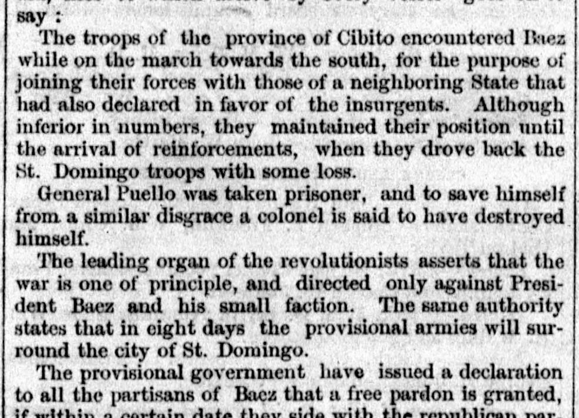
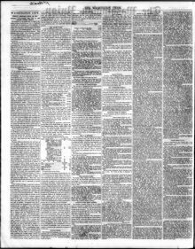

See the full pageVer la página completaThe leading organ of the revolutionists asserts that the war isEl órgano principal de los revolucionarios afirma que la guerra es
The newspaper reported that after the arrival of reinforcements and a subsequent battle, General Puello was taken prisoner and a colonel reportedly killed himself to avoid the same fate, while the provisional government offered pardons to partisans of President Baez. According to the correspondence, President Baez was obliged to leave St. Domingo, and the provisional government was selecting a competent chief, though letters from Port-au-Prince also noted that the insurgents appealed to Emperor Faustin for aid and sought annexation to the empire of Hayti.El periódico dio a conocer que, tras confluir refuerzos y librarse una refriega, el general Puello cayó prisionero y un coronel se quitó la vida para no sufrir igual suerte, en tanto el gobierno provisional extendía el indulto a los adeptos al presidente Báez. Conforme a la correspondencia, el mandatario Báez se vio obligado a desamparar Santo Domingo, abocándose el gobierno provisorio a elegir un jefe idóneo, si bien epístolas remitidas desde Puerto Príncipe advertían que los insurrectos imploraron socorro al emperador Faustino demandando la incorporación al Imperio de Haití.
FULL TEXT:TRADUCCIÓN:
The troops of the province of Cibito encountered Baez while on the march towards the south, for the purpose of joining their forces with those of a neighboring State that had also declared in favor of the insurgents. Although inferior in numbers, they maintained their position until the arrival of reinforcements, when they drove back the St. Domingo troops with some loss.Las tropas de la provincia del Cibao encontraron a Báez mientras en marcha hacia el sur, con el propósito de unir sus fuerzas con las de un Estado vecino que también se había declarado a favor de los insurgentes. Aunque inferiores en número, mantuvieron su posición hasta la llegada de refuerzos, cuando hicieron retroceder a las tropas de Santo Domingo con alguna pérdida.
General Puello was taken prisoner, and to save himself from a similar disgrace a colonel is said to have destroyed himself.El General Puello fue tomado prisionero, y para salvarse de una desgracia similar se dice que un coronel se destruyó a sí mismo.
The leading organ of the revolutionists asserts that the war is one of principle, and directed only against President Baez and his small faction. The same authority states that in eight days the provisional armies will surround the city of St. Domingo.El órgano principal de los revolucionarios afirma que la guerra es una de principio, y dirigida solo contra el Presidente Báez y su pequeña facción. La misma autoridad declara que en ocho días los ejércitos provisionales rodearán la ciudad de Santo Domingo.
The provisional government have issued a declaration to all the partisans of Baez that a free pardon is granted, if within a certain date they side with the republican par-El gobierno provisional ha emitido una declaración a todos los partidarios de Báez de que se concede un perdón libre, si dentro de cierta fecha se ponen del lado del par-
The Washington Union. City of Washington [D.C.], September 18, 1857.
See the original at the Library of CongressVer el original en la Biblioteca del Congreso
Published by: W.A. Harris, 1857-1859.Publicado por: W.A. Harris, 1857-1859.
Edition: Edition 1Edición: edición 1
Page: 2Página: 2
Frequency: daily (1857–1859)Frecuencia: diario (1857–1859)
Collection: Chronicling America, Library of CongressColección: Chronicling America, de la Biblioteca del Congreso
LCCN: sn82006534LCCN: sn82006534
ISSN: 2471-6618ISSN: 2471-6618
OCLC: 8776746OCLC: 8776746
Rights: public domain, according to the Library of CongressDerechos: dominio público, según la Biblioteca del Congreso